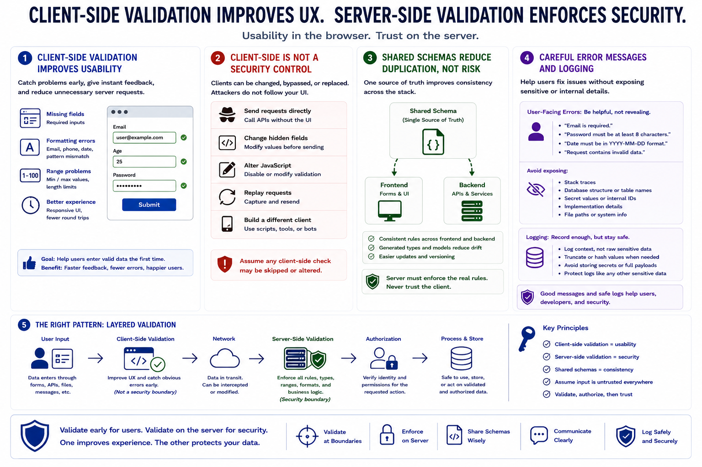

Client-Side and Server-Side Validation
Connecting to LMS... Progress: in progress

Narration
Client-side validation is valuable for usability. It can catch missing fields, obvious formatting errors, and range problems before a user submits a form. Browser controls, frontend libraries, and shared schemas can make interfaces feel responsive and reduce unnecessary server round trips. But client-side validation is not a security control by itself.
Browsers and clients can be modified, bypassed, or replaced. A user can send requests directly to an API, change hidden fields, alter JavaScript in the browser, replay a request, or build a different client entirely. For that reason, server-side validation must enforce the real rules before processing, storing, or acting on untrusted data.
Shared schemas can reduce duplicated inconsistent rules. A team may use the same schema definition, or generated models, across frontend and backend code. This can improve consistency, but it does not eliminate the need for server enforcement. The server should assume that any client-side check may have been skipped or altered.
Error messages should be designed carefully. They should help legitimate users fix input problems without exposing stack traces, database structure, secret values, or unnecessary implementation details. The same principle applies to logs: record enough information to debug and monitor invalid input, but avoid storing raw sensitive values or payloads that could make logs risky to handle.